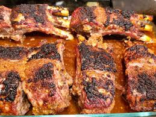

Lamb Ribs Recipe
Lamb Ribs with Honey and wine

This lamb ribs recipe is a combination of Middle Eastern and European dishes.
Best if served with steamed vegetables and hot cooked rice.
Prep Time: 10 mins Cook Time: 1 hr 10 mins
Ingredients
- 3 ½ pounds lamb ribs
- 2 onions, chopped
- 1 cup of dry white wine
- 1/4 cup of fresh lemon juice
- 1/4 cup of soy sauce
- 1 tablespoon honey
- 1 tablespoon olive oil
- 2 teaspoons of minced garlic
- 1 teaspoon of ground cinnamon
- 1 teaspoon of salt
- 1 teaspoon of ground black pepper
Directions
- Place lamb ribs in a 9x13-inch baking dish
- Combine onions, white wine, soy sauce, lemon juice, honey, olive oil, garlic,
cinnamon, salt, and pepper in a medium bowl. Mix well, then pour mixture all
over lamb. Cover the dish with plastic wrap and marinate in the refrigerator for 1
hour.
- Preheat the oven to 400 degrees F (200 degrees C).
- Remove the plastic wrap and roast lamb in the preheated oven until browned
and tender, about 1 hour 10 minutes. An instant-read thermometer inserted into
the center should read 130 degrees F (55 degrees C) for medium doneness.